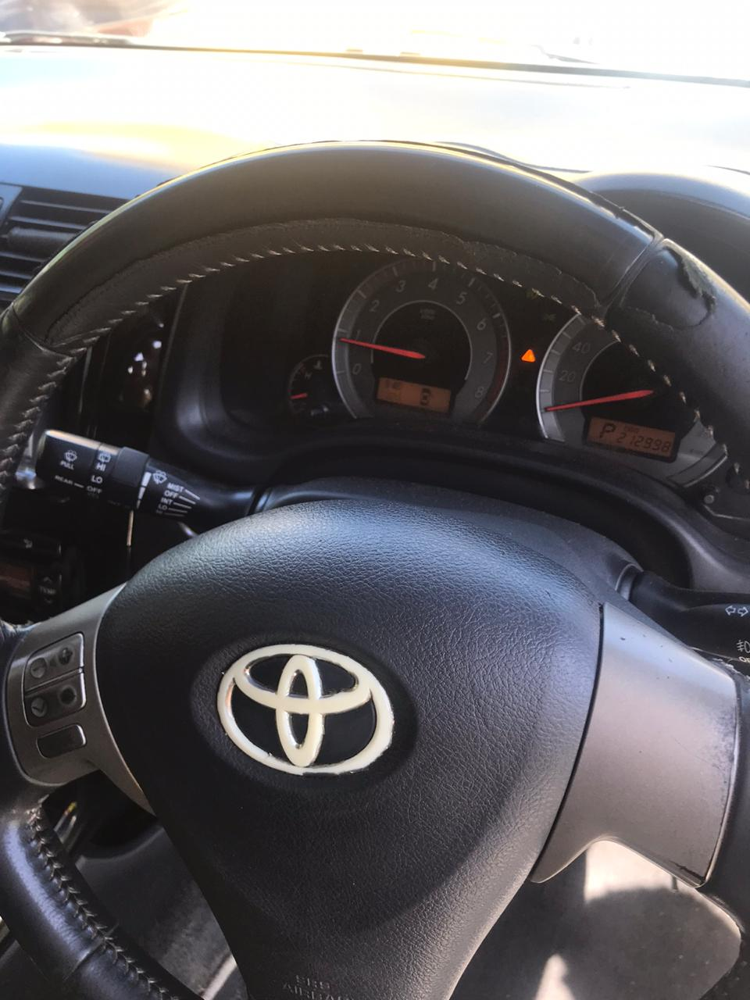

HOME
CONTACT US
ABOUT US
SEEING US IN ACTION
JOZEFZ DIAGNOSTICS

We do OBD 2 AND OBD 1 scans to detect and erase Diagnostic Trouble Codes, also known as (DTC). Checks and minor repairs are also done if we're competent; If not the customer will be sent to a certified garage.